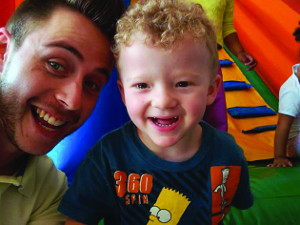

A escolha da profissão envolve reflexões sobre talentos, sonhos, dinheiro e, no caso de boa parte dos estudantes de escolas públicas, oportunidades e superações. Para muitos alunos, a única opção é seguir os passos dos familiares ou aceitar empregos que não oferecem condições de crescimento pessoal e profissional.
Mas podemos mostrar que há caminhos para mudar essa realidade. No Dia do Trabalhador, a proposta é:
Há duas versões para esta ação, uma mais simples e outra mais aprofundada. Na primeira, os alunos vão pesquisar e analisar a vida profissional de moradores de sua comunidade. Na segunda, vão participar da organização de uma Feira de Profissões, com convidados externos.
O que os estudantes vão aprender:
 O Douglas Stafoque, de Jarinu (SP), reuniu 235 alunos do Ensino Médio para falar sobre a importância da formação superior.